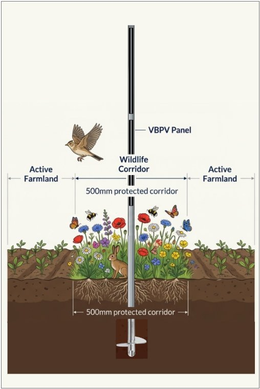

Vertical Bifacial Photovoltaic (VBPV) agrivoltaic systems deliver more energy, preserve farmland, cut grid costs — and eliminate the false choice between food security and energy security. The UK has a 6–12 month window to get this right.
65+ GW of ground-mounted solar projects are in the UK planning pipeline (REPD October 2025). The vast majority are designed as conventional Tilted Bifacial PV (TBPV) — the current UK industry standard, using bifacial panels on conventional south-facing tilted mounts. Supersedes Tilted Monofacial PV (TMPV), which remains the reference system in cited academic studies. Each project that receives planning approval locks in the wrong technology for 25–30 years.
England's first ever Land Use Framework (CP 1545, Defra, March 2026) — a Command Paper presented to Parliament — makes three commitments that directly support the case for VBPV over conventional solar.
The Framework states that clean energy, food production, nature recovery and housing "are not competing demands — they are complementary ones." This is the campaign's founding argument, now embedded in a Command Paper presented to Parliament.
Where solar is proposed on Best and Most Versatile agricultural land (Grades 1, 2 and 3a), the Framework states there "may be the potential for multifunctionality such as through agrivoltaic systems (installing solar panels above crops)." This removes the binary planning objection to solar on productive farmland — provided the technology genuinely retains agricultural productivity.
The first of four Land Use Principles requires that land "be planned and managed to deliver greater benefits across a range of outcomes." The named example is "solar generation designed to enable continued grazing of animals." VBPV is the technology built to deliver this on arable land. Conventional tilted solar is not.
The specification gap. The Framework endorses the agrivoltaic outcome but does not yet specify the technology characteristics required to deliver it. Without published thresholds for agricultural productivity retention, the endorsement risks being claimed by conventional TBPV with minimal biodiversity enhancements. Filling this gap is the campaign's central current objective.
Vertical Bifacial PV systems eliminate the false choice between energy security and food security — delivering superior performance across every metric that matters for the UK.
The solar industry has upgraded its panels. It hasn't upgraded its thinking.
Tilted Bifacial PV (TBPV) is now the UK default — bifacial panels on conventional south-facing mounts. Better than monofacial. Still fundamentally wrong for Best and Most Versatile agricultural land.
VBPV uses identical bifacial panels — mounted vertically, oriented east-west. Same panels. Same land. Fundamentally different outcomes: generation peaks aligned with morning and evening demand rather than the grid's midday minimum; 10–15% higher revenue per kWh; significantly less battery storage required; and 80–90% of agricultural productivity retained on the same land.
University of York field data confirms the winter advantage reaches 24.52%. The grid argument, the food security argument, and the land use argument all hold — against TBPV as much as against its monofacial predecessor.
With 10–12m row spacing and ~100mm posts with 0.45m clearance strips, standard agricultural machinery operates freely. ~92% of inter-row land remains in active production alongside energy generation.
Morning and evening generation peaks align 18% better with UK demand patterns than TBPV — reducing the need for expensive battery storage and grid reinforcement. System savings of £25–35bn across the UK pipeline.
Wildflower strips sown beneath each VBPV panel row provide nectar and pollen for bumblebees, butterflies and hoverflies, whilst attracting ladybirds, parasitoid wasps and predatory beetles that naturally suppress aphids in adjacent crops. Peer-reviewed field research confirms this is compatible with continued arable production — and directly supports mandatory Biodiversity Net Gain (BNG) obligations.

VBPV generates during the 07:00–11:00 and 17:00–21:00 demand peaks when wholesale electricity prices are 25–40% higher than at midday. This translates to 10–15% higher revenue per kWh compared to conventional solar — on top of the seasonal energy output advantage.
Conventional tilted solar floods the grid at midday, driving price cannibalisation. VBPV's east-west orientation naturally avoids this, producing a morning peak and an evening peak that closely track household and industrial demand — making every unit generated worth more.
The dual advantage of higher output and higher revenue per kWh makes VBPV significantly more attractive to investors and CfD bidders than the headline capacity figures suggest.
VBPV's agricultural compatibility directly addresses the core objection raised by local authorities, communities, and the NFU — that solar farms remove productive farmland from the food supply chain. With 80–90% of land remaining in active cropping, this objection is substantially neutralised.
Standard agricultural machinery operates between the rows without modification. Existing farm tenancy arrangements, crop rotations, and agri-environment scheme eligibility can be maintained — removing the planning friction that currently delays or defeats conventional solar proposals.
For NSIPs and Section 78 appeals, VBPV's dual land-use case offers a compelling response to Inspectors weighing energy need against agricultural land protection under the NPPF.
Three interlocking advantages that make VBPV the rational choice for UK solar deployment.
The UK does not need to choose between feeding its people and powering its economy. VBPV agrivoltaic systems deliver both — at lower total system cost, with better grid alignment, and with the farmland communities depend on preserved for generations.
All economic claims on this site use the most current independently verified data — not legacy assumptions that have since been superseded.